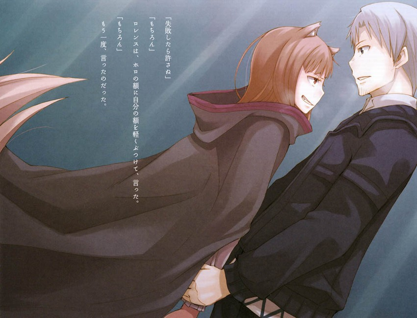

羅倫斯很快就認出了村後面那條通往森林的小路。
的確是條小路，最多也就能讓獵人們扛着逮到的鹿往回走而已。
不過，就像其它常有人走的路那樣，不但雪被踏得結結實實，樹枝也被清理得乾乾淨淨，十分好走。
羅倫斯和赫羅在樹木之間不停地奔跑着。
「那算啥啊」
赫羅開口問道。
「不知道。既然說是代理官，那麼肯定整個村……都會有麻煩吧」
中途的停頓是為了跳過腳下的樹根。
赫羅也提起斗篷蠻輕快地跳過了。
「那人是不是說『森林和湖泊都會被毀掉』？」
「嗯」
羅倫斯回答道，同時腦子裡浮現出一個念頭。
代理官突然來到村莊，作為村代表的繆拉又那般慌亂。
而且還說「森林和湖泊都會被毀掉」，那麼能得到的結論就只有一個。
不過羅倫斯沒有說出來。這並非是他有所顧忌，而是因為已經上氣不接下氣了，根本沒功夫說話。
羅倫斯牽着赫羅的手，在一個緩緩的上坡路上跑着。
「早知道這樣……就變回原來的樣子好了」
赫羅這個不知道是不是真心的玩笑才說出口，小路的左邊就突然明亮了起來。透過樹叢能看到白茫茫的湖岸。再跑了幾步路後，又有條通往湖畔的匝道。
兩人一滑就從小坡上下了來。
湖邊的足跡應該是芙蘭和柯爾的，既有來的，也有回去的。
羅倫斯四下看了看，發現在小屋旁通往瀑布的路上有兩個人影，一動不動地站在那裡，似乎正在盯着什麼東西看。
羅倫斯朝兩人揮手，正準備喊出聲來。
而制止他的不是別人，正是赫羅。
「嗚！哦……干、幹什麼啊？」
「別叫那麼大聲」
赫羅小聲地說道。羅倫斯還以為是在開什麼玩笑，可是赫羅的臉是認真的。
羅倫斯再次朝那邊看過去的時候，芙蘭和柯爾的確既不像是在觀察什麼東西，也不像是在增進友誼。
兩人就那麼一動不動地站着。
彷彿是屏住了呼吸一樣。
「可能是坡下面有什麼人吧」
「……如果是這樣的話，我們是不是該藏起來？」
「大笨蛋。在這種地方，就算能被別人看到，只要不動基本上就不會被發現。反過來，即使是獃在樹叢裡，一動別人也會察覺到」
赫羅這個森林的獵人都這麼說，那就肯定是這麼回事了。
凝目眺望，芙蘭用手制住了柯爾，然後保持着當時的姿勢，像定格了一樣地站在那裡；而柯爾則是在想藏起來的時候被制止了，身體的姿勢很不自然。
這應該算是最佳的反應了。
只不過，令人在意的是，這些連羅倫斯都不懂的危險對策，芙蘭是從哪裡學來的。
「哼」
赫羅哼了哼鼻子，或許她也在想這個問題吧。
過了一會，芙蘭轉過身來朝貓着腰的羅倫斯和赫羅招了招手。
距離這麼遠，看來還是被她察覺到了。
羅倫斯推着一臉不快的赫羅朝那邊走去。
「發生什麼事了？」
羅倫斯向芙蘭問道。
柯爾一看到是羅倫斯他們，頓時鬆了口氣，兩腿一軟，坐在了地上。
「士兵進了屋子裡。你們呢？」
「一樣，士兵進村了。領主似乎會帶兵來。說是『森林和湖泊都會被毀掉』」
領主想幹什麼，羅倫斯可是一點也摸不着腦袋。
不過，芙蘭似乎事前就已經把握了此地的事態。得知領主要來之後，馬上就明白這是怎麼一回事了。看著河水的那張心神不定的臉，就像畫畫的時候換顏料一般，染上了憤怒的色彩。
「他們這種沒節操的行為還真是到了讓人佩服的地步」
「你是說……」
還沒等羅倫斯問完，芙蘭就回答道。
「他們是想讓卡提麗娜從這個世界上消失」
在這一瞬間，羅倫斯明白了。
卡提麗娜早就已經過世了。
那麼芙蘭所說的就真的是字面上的意思。
「也就是說，異教和正教都不重要了，正要來臨的是金錢的時代」
說得真灑脫。
芙蘭一邊開着腹黑的玩笑，一邊從憤怒的臉上露出笑容，然後嘆了口氣。
「都到這個地步了……那個領主才做出決斷……明明還差一點，就差那麼一點了……」
芙蘭很不甘心地說道。從斗篷下傳來她雙手握拳的咯咯聲。
能讓這個像蝙蝠一樣地在正教和異教之間飛來飛去的領主做出決斷的，是第三個選項。
隨着時代的變遷，曾經是絶對權威的教會也逐漸衰落了。他應該已經不打算再利用教會了。
那麼，他肯定是想通過把和卡提麗娜這個魔女有關的一切都抹去，來與信仰方面的問題劃清界限了。
然後迎合迪巴瓦商會煽動的新一輪的大遠征，通過設立水車，吸引人們來到這裡。
就好像是隻要有錢，正教異教都沒所謂了一樣。
「地圖呢？」
芙蘭抬起頭盯着羅倫斯。
「給我們畫了……等等」
羅倫斯叫住了正要往前走的芙蘭，用力地盯着她的雙眼。
「請冷靜一下。倘若領主已經決心消除卡提麗娜在這個世界上留下的痕跡，那麼我們對他來說就只會是礙事的而已。要說服他是不可能的了，想繼續調查天使傳說他肯定也不會同意」
聽了羅倫斯的話之後，芙蘭的臉痛苦地扭曲了。
她不傻。
即使一時衝動了，腦袋還是能想明白問題的。
「我知道離天使傳說的真相已經是咫尺之遙了。我也知道你來這裡絶對不是為了好玩而已。但是，現在很危險」
逃吧。
羅倫斯說完，芙蘭就像挨了當頭一棒一樣，往身後倒退了好幾步。
如果柯爾沒有馬上扶住了她，肯定會摔倒在地上。
「……怎麼可能……明明……就差那麼一點了……」
剛纔在小屋裡還高興得興奮不已。
可是所謂期望越大，失望也越大。
苦瓜臉的赫羅也插了句話。
士兵們暫時都撤了回去，要逃就只有趁現在了。
「雖然很可惜」，羅倫斯一邊說著，一邊想握住芙蘭的手，而就在這個時候。
「我從路德?基曼那裡聽說了你的事蹟」
羅倫斯一時之間不知道該說什麼好。芙蘭這話說得太突然，羅倫斯都還沒反應過來。
而且，沒想到會從她的嘴裡蹦出基曼的名字，那感覺簡直就像秘密被揭穿了一樣。芙蘭選羅倫斯他們一起來此，肯定做過相關的背景調查。在克爾貝那個地方，只要稍微想一想就會去基曼那，這也不奇怪。
羅倫斯害怕的，是一種更加現實的預感。
或者可以說這是商人的本能，把理性撇一邊，擅自構築起自己的迴路來。
就在這個時候，羅倫斯終於明白芙蘭想說什麼了。
「聽說你天不怕地不怕，看準機會就賺取利益，還常常巧妙地利用人際關係」
芙蘭擦了擦眼淚，試圖擠出個笑臉來，可是這卻讓她看上去更可憐了。
羅倫斯實在忍不住要問。
上帝保佑，希望是自己多慮了。
「你想讓我怎麼辦？」
「請說卡提麗娜?路奇是聖女」
赫羅和柯爾都目瞪口獃了。
信仰什麼的都已經沒用了，為何還執着於是不是聖女呢？
兩人的心裡肯定是這麼想的吧。但是羅倫斯卻不一樣。
而且，是完全不一樣。
虔誠的修女和聖女可是有天壤之別。
待遇當然也不同。
價值就更是如此。
「怎麼可能——」
「她是被推舉為列聖候補的聖女。雖然在雷諾斯的時候隱藏了身份，但是有很多貴族都援助她。樞機卿的書桌裡現在還有貴族們請求將她列聖的陳情書。怎麼樣？」
芙蘭說完之後嘴巴一閉，就像把內心也封閉起來了一樣。
事實上，芙蘭說出來的話的確很不得了。
永不回頭，孤高的銀細工師芙蘭?波涅利。
她做出的判斷確實就如這個評價一樣，現實得不能再現實了。
羅倫斯硬吞了一口口水。
「如果修女卡提麗娜變成了聖女卡提麗娜，那麼在那個小屋裡的東西——包括她的遺體——就都變成聖遺物了」
聽到聖遺物這個詞之後，柯爾似乎明白過來了。
而芙蘭這時候也像看到事先約好的暗號一樣，嘴角邊終於露出了一點微笑。
「聖遺物就是一筆龐大的遺產，只要這麼說領主肯定會放棄水車。你要是懷疑的話，就請回屋裡看看她的日記。裡面記載了各地諸侯的名字，以及他們認識卡提麗娜的緣由。只不過小屋之所以會被棄置在這裡，可能也是因為列聖的手續被中止了」
這真是隻在傳聞中才聽過的事。
當某個人被列聖，成為聖人之後，與他有緣的東西都能買到天價；那裡如果被譽為奇蹟之地的話，還會有很多人前去巡禮，這樣不僅僅是教會，就連周邊的地區也會熱閙起來。為了把自己地盤上的聖職者列為聖人，貴族們常常湊在一起，而為此也會產生龐大的開銷。
對這些貴族來說，此事不但是為了自己死後的幸福，還為了在世時的利益，是個巨大的賭博。
雖然為此破產的人不計其數，但還是有更多的人鋌而走險，這也是因為回報實在是太可觀了。
卡提麗娜?路奇的這一生還真是深深地陷入了這個漩渦之中啊。
「你要我，把聖女，賣掉？」
「買賣對你來說不是家常便飯嗎？」
芙蘭露出了在猶古商會裡，一張地圖開價五十金幣時的那個臉。
這次可是真的不能任由她擺佈了。
羅倫斯反對道。
「這樣太莽撞了。在克爾貝，獨角鯨那件事最後正面交涉的是基曼，還有另一位曾經是貴族的商人。在溫菲爾那，我雖然參與了聖遺物的交易，但是說白了，那根本不是我能插手的事情」
金錢這種東西，積累起來並不僅僅是量變，在某個點開始，還會產生質變：從購買物品的錢變成購買人心的錢，然後再變成購買他人命運的錢。
聖遺物就是這樣的東西。
可是，芙蘭仍然死死地盯着羅倫斯，一點妥協，一點退讓都沒有，就像亮出最後的底牌一樣，說道。
「作為報酬，我給你畫出北方的地圖，馬上就畫」
羅倫斯愣了一下。
「……啊？」
羅倫斯這麼問並不是因為他覺得芙蘭是在開玩笑。
而單單是太過吃驚了。
說得好像僅僅為了一張北方的地圖，就值得羅倫斯冒險虛構聖女，變賣聖遺物一樣。
芙蘭一動不動地盯着這邊。
羅倫斯忍不住問道。
「你覺得這值得嗎？」
儘管這麼形容有點不適宜， 不過聽到羅倫斯這麼一問，芙蘭露出了可愛的笑容，緩緩地睜開眼，就像是在說「真的不值嗎？」一樣。
只是，和剛纔羅倫斯告訴她村裡來人了的時候不同，雖然沒有那麼驚訝，但是表情裡卻似乎多了點什麼。
褐色的皮膚，漆黑的雙眼。
簡直就如魔術師一般的芙蘭用壓抑的聲音問道。
「你不願意為了北方的地圖冒險？」
羅倫斯側眼看了看赫羅。
赫羅只是一直盯着芙蘭，柯爾則是一臉困惑的樣子。
僅僅是危險的話，那還可以碰碰運氣。
然而，事到如今還要將生前已經被肆意叫做魔女什麼的卡提麗娜捧為聖女，然後再編個謊言把她賣給領主？這種事羅倫斯實在是做不出來。
要真的這麼做了，羅倫斯以後還敢碰赫羅的手嗎？
「欺騙領主，而且還要在買賣聖女的前提下交涉……我做不到」
「是麼」
芙蘭說完就往前走去了，一點多餘的動作也沒有。
當她和一動不動的羅倫斯擦身而過之後，藏在羅倫斯胸前的地圖便到了她的手上。
「你去哪？」
雖然知道這是個毫無意義的問題，羅倫斯還是忍不住要問。
芙蘭像是在思考什麼似的，停了停，然後慢慢地轉過身。
「連猶古的嘴巴都能撬開，我還以為你的決心有多堅定呢」
羅倫斯回想起在商會裡情景：猶古低聲下氣地應對著芙蘭那種旁若無人的態度。無論發生什麼事，猶古最優先的，還是讓芙蘭畫出他們的故鄉。
羅倫斯他們的確是讓這樣的猶古開了口。
芙蘭繼續說道。
「我本來還以為你跟我一樣，不過看來我錯了」
「這是……」
這是什麼意思？還沒等羅倫斯問完。
「你就是抱著這樣的覺悟來要北方地圖的？」
「！」
羅倫斯的胸口感到一陣針刺般的疼痛。芙蘭說完，繼續往遠處走去。
腳就像是被縫在地上似的，一動不動；腦子裡也一片空白。
那感覺就像是在搞惡作劇的時候被人潑了一身的冷水似的。
清清楚楚、光明正大地說白了，那句話的意思就是：
你是抱著什麼樣的覺悟來討北方地圖的？
這覺悟實在是太渺小了：
想和赫羅繼續旅行。
這甚至還是在相互確認了不會不顧一切的前提下，才締結的天真的約定。
追尋狼骨，還有提出尋找北方地圖，這些雖然都不是毫無理由的；一個個分開來看，確實好像沒什麼關聯。
可是，這一連串列動的理念卻十分明顯。
原因僅僅是個既單純又幼稚的動機，那就是想和赫羅在一起。
那麼，建在這樣一個地基上面的，怎麼可能會是一棟出色的屋子呢？
儘管羅倫斯心裡都是明白的，但是被芙蘭這麼一說，還是像打翻了五味瓶一樣難受。
除了獃獃地站在那裡，真不知道該怎麼辦才好。可是，赫羅輕輕地握住了羅倫斯的手。
「被說到痛處了呀」
赫羅抬起頭，一臉爽快地說道，就像是個愛搞惡作劇的少女一樣。
「不過，汝真的打算賣那個風乾了的嗎？」
羅倫斯第一個反應就是：怎麼可能。
那麼，赫羅想說什麼就很明顯了。
她用視線讓羅倫斯領悟到了她的意思。
如果是為了村民，那赫羅或許會義憤填膺地跳出來幫忙。
可是，卡提麗娜生前死後都飽受村民和領主利用，所以羅倫斯絶對不想為了自己的利益來再次利用她，
雖然不能心安理得地拒絶，但是芙蘭的這個方案實在是無法苟同。
況且，最後為了不讓秘密泄露出去，還可能把他們殺掉。
「我們逃吧」
聽到羅倫斯這麼一說，赫羅點了點頭。
而開口的，是從剛纔開始就一直在旁邊聽著的柯爾。
「要把芙蘭小姐一個人留下來嗎？」
羅倫斯和赫羅對視了一下。
芙蘭的確重要，這個無可非議。
「等我們逃到安全的地方之後，可以讓赫羅幫忙，或者把事情告訴猶古商會，確保她的人身安全。需要她的人還是很多的」
不會眼睜睜地看著她去送死。
可是，柯爾卻好像快要哭出來了一樣地說道。
「我不是這個意思。芙蘭小姐一直在追尋的天使傳說，你們也要放棄嗎？」
說實在的，羅倫斯真不知道該怎樣回答這個問題才好。
追尋天使傳說是出於芙蘭自身的理由，這和羅倫斯他們根本沒關係。
可是這麼一想，馬上又覺得有點不對勁。
芙蘭應該已經對柯爾說過她真正的目的了吧。
既然能馬上想出把卡提麗娜當作聖女賣給領主的方案，可見她的目的給了她多大的覺悟。
儘管如此，羅倫斯仍然試圖向柯爾解釋：在這裡繼續追尋天使傳說是多麼的不合理。
可是，一本書讓羅倫斯閉上了嘴。
把書拿出來的柯爾都快哭了。
「我本來就只是硬跟着你們來的。而且我也很喜歡你們。但是……但是，我還是不忍心撇下芙蘭小姐」
柯爾說完，把書塞進了羅倫斯的手裡，背起行李就跑開了。
連說句話的時間都沒留下。
柯爾是個心地善良的少年。只要聽芙蘭說出她追尋傳說的真正理由，肯定馬上就會被感化。
不過，這個想法馬上就被羅倫斯拋在腦後。
柯爾拿出來的這本書，從封面上看，很明顯是聖經。
羅倫斯的臉緊繃著。這並不是因為在如此場面被別人往他手裡塞了本聖經，而是因為聖經上那大塊大塊的血跡。
「什麼呀，這是」
赫羅這麼一問，羅倫斯才回過神來。
「好像是本聖經吧……」
羅倫斯隨便翻了翻。
書中有些紙的邊緣被磨損了，有些紙被血粘在了一起翻不開了，還有些紙被煙燻黑了。簡直就像一本經歷了無數戰火洗禮的書。
而且，羅倫斯發現書裡還夾着幾張折起來的紙。
打開一看，上面潦草地寫有針尖般鋭利的文字。
「親愛的……基路亞……拜依，恩……基路亞拜依能傭兵團？」
在滿是血跡的聖經裡夾着的紙張上面，寫有傭兵團的字樣。
羅倫斯抹去上面的煤灰，眯起眼解讀道。
傭兵團的旁邊，有個署名。
「芙蘭……波涅利」
既然是芙蘭讓柯爾背着的行李中的東西，那麼這封信很可能就是寫給芙蘭的。可是當羅倫斯看到署名邊的頭銜後，忍不住又開口念了一遍。
「隨軍牧師，芙蘭?波涅利」
羅倫斯的腦袋就像被人用鐵棒敲了一下似的，震驚得連赫羅在一旁叫「汝啊」也聽不見了。羅倫斯繼續翻開信的第二頁。
信上的文字有的化水了，有的則被煤灰、血跡或者污垢弄得無法辨認了。
不過，還是搞懂了一個問題。那就是，寫這封信的，是基路亞拜依能傭兵團的書記。而且，芙蘭當時似乎和傭兵團並不在同一個地方。第二張紙的開頭寫有「心懷你的祈禱，寫自遠方」。這個似乎是書記的人，用他獨特的字型簡單地記述着事實。
「利迪昂戰役，十夫長馬魯丁?古魯卡斯陣亡。」
「在拉萬平原遭叛徒出賣。被李茲昂侯爵的士兵追殺。上帝的詛咒。當晚，酒保利艾魯因傷過世。一睡不起，沒有遺言」
「因有人告密，我們躲在伯爵家的百夫長，海曼?羅素被捕。在獄中也堅貞不屈，常常把你掛在心頭」
然後，是最後一頁。
「在那庫裡教區的米裡古亞鎮，聖拉夫艾露之月，絞刑。死前給你留有遺言，前一陣子，看到天使……」
這張紙最後的地方皺得不像樣了。
雖然後面好像還寫了些什麼，但是字都完全化掉了，根本無法辨認。
羅倫斯獃獃地站在那裡，過了半天，才從口中嘣出了一絲聲響。
「啊……」
年紀輕輕就被諸侯賞識，而且還習慣干力氣活，就連膽子也大得像山賊。
可是，言行舉止卻不失文雅。
基曼說她是在戰場上出生的銀細工師。芙蘭也曾對猶古說過自己以前是奴隷。這兩句話終於有了連接點。
傭兵團保護芙蘭不受刀槍劍戟的傷害，而芙蘭則用信仰這個盾牌為他們抵擋死亡的恐怖，並且引導迷失方向的夥伴。
可是，如果是這樣的話，那麼芙蘭追尋天使傳說的理由也就隨之而變了。最後那張紙皺巴巴的，上面的文字都化掉了，這只能說明一個問題。
芙蘭所說的熟人，應該就是被處以絞刑的百夫長吧。
回想一下天使傳說就知道了。
通往天界的門敞開了，天使踏上了旅途。
已經不需要再多費唇舌說明這句話的特殊含義了吧。
講述傭兵團日落西山時的悲慘故事多得數不勝數。芙蘭之所以還能活着，是因為她遠離了那最後的地獄。信中的「寫自遠方」正好證明了這一點。
而且，正如猶古所說的那樣。
先死的，總是那些擁有尖牙利爪的人。
牧師能做到的僅僅是祈禱而已。既然祈禱無法格擋刀劍，那麼也就不用上戰場。
並且，事實上，芙蘭也還活着。
「汝啊」
聽到赫羅的話後，羅倫斯終於回過神來。
可是，赫羅沒有繼續往下說。
「抱歉」
或許只要看看表情，她就已經明白羅倫斯想說什麼了吧。一陣風從河流的下游吹來，刮過快要乾枯的河床，穿過羅倫斯他們的身邊，卷着幾片雪花沒入了森林之中。
「能幫幫忙嗎？」
羅倫斯簡短地問道。
赫羅沒回話，而是伸出了手，就像在說把聖經和信都交出來一樣。
「汝打算怎麼辦？」
赫羅從羅倫斯手中接過聖經和信，看完後這麼問道。
細節方面或許有點模糊，不過大致上應該是能夠理解的。
而且，柯爾還如此罕見地說出了自己的意見，跟着芙蘭走了。
單單是這一點就足以引起重視了。
「我知道這是不值錢的同情心」
「那麼為什麼還讓咱幫忙？」
被這麼一問，羅倫斯不自覺地笑了。這並不是因為他想搪塞過去。
而是這話連他自己都覺得不好意思說出口。
赫羅驚訝地看著羅倫斯，然後一把揪起了他的耳朵。
即使是這樣，羅倫斯的笑容還是沒有消失。
那是因為他心裡的想法實在是太可笑了。
「我是想，人世間如果沒有那麼嚴酷該多好啊」
赫羅還是不肯放手。
羅倫斯也仍然直視着赫羅的雙眼。
「世事能再稍微如意一點就好了。就像經歷過磨難之後便能創造奇蹟一樣。要是能這樣該多好啊」
芙蘭所在的傭兵團沒能挺過磨難。活下來的芙蘭也正在試圖闖過磨難，但是就這麼下去奇蹟也不會發生。
水車肯定會建起來，然後運氣不好還可能會被殺掉。
就算運氣好，沒有死，那麼只要看看苟活至今的人，再看看已經死去的人，也能悟到世間的真理。這個即使是被拳頭嚇得不敢任性的小孩子也能明白。
只不過，甘心被叫做魔女，為他人傾盡心血，心懷虔誠的信仰，在那小屋裡過世的卡提麗娜，也曾經在此追尋常識不能解釋的天使傳說。
那麼，無論是不值錢的同情心還是虛假的奇蹟都沒所謂了。
人世間沒有那麼嚴酷。
真希望是這樣。
「笨死了」
話雖簡短，卻十分貼切。
「真是笨死了」
赫羅一臉不能理解的樣子，嘆了一大口氣，然後就像沒心思陪羅倫斯一起笨一樣放開了揪着耳朵的手。
不過，另一隻手的小手指卻鈎住了羅倫斯的無名指。
「汝應該很明白人世間有多麼嚴酷吧？」
赫羅是賢狼。
羅倫斯那點膚淺的想法一眼就能看穿。
「我明白。不過」
「不過什麼？」
如果這個問題回答錯了，赫羅可能就會離他而去了。
前不久，或許還會這麼想。

羅倫斯抓住赫羅的手，把她拉進懷中，然後說道。
「看到一個有着悲慘過去而又感情專一的小女孩，你就不覺得想幫幫嗎？」
赫羅露出了小尖牙。
白白的，真漂亮。
「可不許汝失敗哦」
「那是當然」
羅倫斯輕輕地碰了碰赫羅的額頭，然後又重複了一遍。
「那是當然」
-----------------------------------------------------------------------
「話說回來，汝打算怎麼辦啊？」
還沒回到小屋，赫羅就忍不住這麼問道。
「我的計劃並不難，就說卡提麗娜是聖女而已」
「……汝要把她賣掉？」
「不賣。卡提麗娜是聖女，我們則是為了辦理列聖手續而被派遣來這裡進行考察的人」
說白了，這句話的意思就是：和列聖手續相關的各種人物都在關注着此地。
那麼如果羅倫斯他們遇到了什麼不自然的事故，或者村民有什麼不可解的舉動，領主今後都會陷入困境。
「但是，就算領主有多笨，正因為他膽小，才會在做出決斷之前好好調查清楚呀。即使的確有過列聖手續這麼一回事，他肯定也能馬上搞清楚咱們不是那些人的代理吧？那麼這麼說有什麼意義啊……」
赫羅說著說著，好像就已經領悟到了。
羅倫斯也料到她會露出那一臉不願意的樣子。
「所以才說要你幫幫忙嘛」
「……咱還以為是幫汝想點子呢」
說完，就像小孩子閙彆扭一樣地嘟起嘴。
不過，赫羅並沒有再繼續說什麼。
於是羅倫斯開口說道。
「天使傳說中有野獸的嚎叫。只要你能幫忙，這台戲就一點都不難演。肯定沒人會懷疑卡提麗娜就是『真正』的聖女了」
「嗯」
「而且，事實上列聖手續被中止了。沒有被教會正式列聖，公認為聖女的話，那麼就沒有聖遺物的價格問題了。沒有價格，根本就談不上買賣了」
赫羅似乎覺得很沒趣，插口說道。
「刷小聰明」
「至少用狡猾這個詞也好嘛」
赫羅嘆了口氣，就像是在說：不都一樣嗎？
「最後只要給領主打個預防針就行了。就說：事關龐大財富和宗教信仰，不小心說漏嘴絶對沒有好處」
這對在正教和異教之間像蝙蝠一樣飛來飛去的領主來說，應該是句刻骨銘心的話了。
那嘴肯定會閉得比一隻聽話的旺財還緊。
當然，這個辦法也只是個權宜之計。
不過，還是能夠拖延到足夠的時間，直到芙蘭放棄天使傳說為止。
「嘛，這主意算是比夾着尾巴逃跑來得好吧」
赫羅說著，走進了小屋，往地爐裡添上了木柴。
----------------------------------------------------------------
卡提麗娜?路奇差一點就被教會正式公認為聖女了。
她所留下的那本日記，與其說是日記，還不如說是本平實地記敘了日常生活的本子。
不過，通過這麼一本本子，就足以瞭解卡提麗娜是個什麼樣的人了，也能夠理解她以前的處境了。
裡面記載了大主教——連羅倫斯都聽說過他管轄的那個大教區的名字——來信商量的事，貴婦人來信商量的事，還有大商會的主人來信討教的事。
卡提麗娜的日常生活似乎就是回覆這些信件，考察教理問答，翻譯聖經以及抄寫重要書籍。
僅僅是這樣的話，看上去的確像是安安穩穩，充滿信仰的每一天，不過日記偶然也有一些能窺視她內心想法的地方：
聖經翻譯完成後，某個教區的主教想用，結果一借不還；抄本則被書商硬是用錢買走了；教會會議決定女人不能參與教理問答，所以只能用筆名寫。
更過分的，是那些大人物找卡提麗娜商量事情的信件：
大教區的大主教說他雖然教義教理什麼的都能倒背如流，可是整天都要應酬貴族們的晚餐，結果現在饕餮成性（譯者註：饕餮是傳說中的一種凶惡貪食的野獸，很能吃，於是就成了貪婪食慾的代名詞，這裡可以簡單理解成貪食；另外，貪食，也就是Gluttony，還是基督教的七宗罪之一，但丁的神曲中曾設想通過強迫吞食老鼠蟾蜍之類的東西來懲罰貪食者），所以傻乎乎地來信問怎麼辦。
貴婦人寫信來商量的儘是些和丈夫吵架的瑣碎事。
大商會的主人則來信問了個直率的問題：到底要為窮人們捐多少錢，他死後才能上天堂。
卡提麗娜認真、仔細、懇切、耐心地回答了他們的問題，日記裡還留有回信時的草稿。
只是，在回答這些愚蠢問題的間隙，還夾着這樣一行短短的話。
這也是上帝給我的考驗嗎？
從中透出了這位一心虔誠信仰上帝的修女心中的苦惱。
雖然她一再寫信回絶列聖，但是收到的回信卻都是說支援者多了，列聖就快了什麼的。
羅倫斯在心裡暗暗記下這些王公貴族的名號以及和各地的情況，心裡面卻越來越難受。
日記中還記載了某天從村裡來了個代表，解釋了事情的緣由之後，懇求卡提麗娜允許他們稱她為魔女。
而卡提麗娜也很同情村裡人，於是抱著只要自己受點委屈就能解決問題的想法接受了。
就如芙蘭所說的那樣，卡提麗娜用潦草的字跡留下了對軟弱人類的感嘆。
接着，從某個時候開始，日記就真的變得像日記一樣了。
季節的變化以及愛犬的話題變多了。比如說生下小狗了啊，狗狗抓住了小鳥所以她請求上帝寬恕啊，寫的儘是這些東西。
與其相反，雖然在這些記敘之間還夾着貴族們的來信，但是卻沒有了回信的痕跡。在這之後，就連村裡人怎麼樣了，也無法從日記中得知了。
大概是放棄了吧。
即使自己無法將信念貫徹到底，世界也不會因此而有什麼改變。
羅倫斯慢慢地合上了這本後半部分滿是愉快日常生活的日記。
屋子裡已經有點黑了，太陽不久就要下山了吧。
往地爐裡添了些柴火之後，羅倫斯走進了獸皮對面的房間。
赫羅說是來書架這邊找找看有沒有什麼能用得上的東西。不過走進房間之後，卻發現她在隔着木窗眺望遠方。
彷彿是在和坐在椅子上的卡提麗娜一起眺望着外面一樣。
「能看見瀑布」
赫羅嘟囔着。
「景色真漂亮」
聽赫羅這麼一說，羅倫斯也站在她身後，往窗外望去。
的確，窗外剛好能看到瀑布。
而且木窗與瀑布之間的雜草也被清理掉，積上了一層白白的雪。
不難想象那裡曾是個花壇，或者菜園什麼的。
「說不定，這傢伙閉上眼睛的時候只是想悠閒地睡個午覺呢」
赫羅說著，隨手戳了戳卡提麗娜的腦袋。
看過日記之後，的確有這種感覺。再說，這樣的臨終也很不錯。
羅倫斯苦笑着這麼想著。
赫羅把手搭在了窗邊上。
「起風了，好冷」
說著就關上了木窗。
按照她的性格是不會自己去關窗的。估計是不想在這裡繼續說下去吧。
在死者身旁的會話，無論內容有多麼歡快，說話的人到最後都會悲傷起來。卡提麗娜既被喚作魔女，又被譽為聖女，生前死後都被人任意利用，那麼在她遺體旁邊就更是如此了。
關上木窗之後，赫羅獨自回到了有地爐的那個房間。
羅倫斯也馬上跟了過去。
儘管嘴上說村民和領主自私自利，羅倫斯他們其實也一樣，為了自己心安理得，而試圖將卡提麗娜推上聖女的祭壇。
可是，跟在赫羅身後的羅倫斯卻決定把這個問題拋在腦後，心裡緊緊地握著他的免罪符：商人追求的永遠是現世的利益。
在這之後，芙蘭他們回來了。發現羅倫斯和赫羅還沒離開之後，她十分驚訝。而柯爾，則是高興得眼淚都快掉出來了。
為什麼突然改變主意了？站在門口的芙蘭似乎差點就要問出口了。不過，當她看到羅倫斯手中那本滿是血跡的聖經之後，卻安下心來。
芙蘭看了看柯爾，然後再次把目光投向羅倫斯。
在他手中的，是自己的過去，還有從過去延續而來的現在。
芙蘭低下了頭。
無論是什麼時候，商人都必須唯利是圖。
「準備給我們畫北方的地圖吧」
從門口那邊傳來了芙蘭緊緊握住斗篷的聲音。
「就算是我們，也有想要相信的東西」
芙蘭低着頭，淚水配合著她點頭的節奏吧嗒吧嗒地往地上掉。
「……好的。我答應你們」
芙蘭抹了抹眼睛，抬起頭說道。
「謝謝」
羅倫斯笑着收下了這句話，不過眼睛卻沒有看著芙蘭。
地爐裡的炭塌了，砸起了點點的火花。
羅倫斯看著小屋的外面說道。
「還沒到說謝謝的時候呢」
曾經是隨軍牧師的芙蘭似乎馬上就明白了這話的意思。
再次點了點頭後，立刻這麼問道。
「你準備怎麼辦？」
「就跟當初約定的那樣，你是主教派來的銀細工師。只不過，還要再加上一個目的，為了辦理列聖手續而被派遣來這裡進行考察」
剛這麼一說的時候芙蘭還沒能理解，不過她也是個聰明人，似乎馬上就明白了羅倫斯的目的所在，緩緩地點了點頭。
「我可沒打算把卡提麗娜賣出去。所以換個說法，就說列聖手續還在進行中。這樣應該就能讓領主無從下手了」
芙蘭又點了點頭，明確地說道。
「我明白了」
從遠處傳來了馬蹄聲和幾個腳步聲。
芙蘭再次抹了抹眼淚，把羅倫斯還回來的聖經緊緊地抱在胸前。
「那麼我們就上吧」
芙蘭抬起頭來之後的表情一臉凜然，措詞也的確像個生活在戰場上的人。